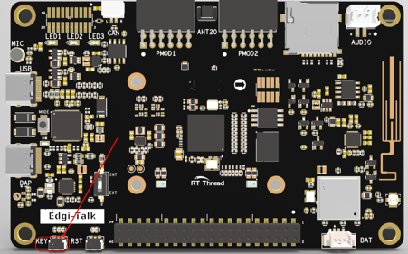
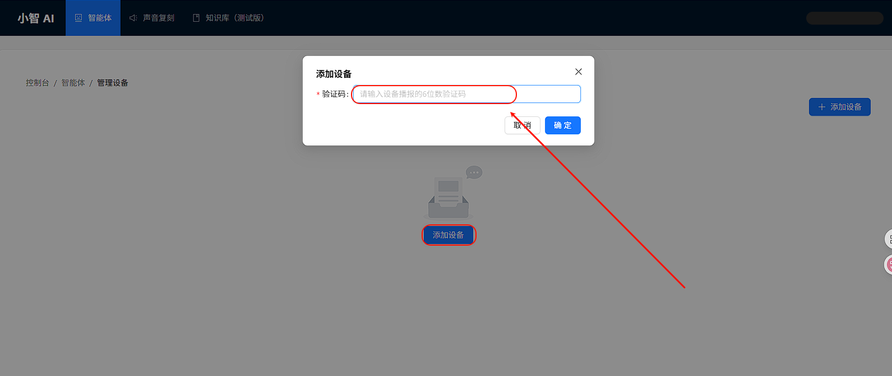

Introduction
This example demonstrates the basic functionality of XiaoZhi voice interaction device
on the Edgi-Talk platform, running RT-Thread RTOS.
It allows users to quickly test Wi-Fi connection, key wake-up, and voice interaction,
serving as a foundation for further application development.
Software Description
- Developed on Edgi-Talk platform.
- Example features:
- Wi-Fi connection and status display
- Key wake-up and voice interaction
- Device state management (standby, listening, sleep)
Running Result
- After power-on, the device runs the example automatically.
- The screen displays the current status:
- Connecting – connecting to Wi-Fi
- On standby – idle mode
- Listening – ready for voice interaction
- Sleeping – low-power sleep mode
- Hold down the top button to speak and enter the Listening state for voice interaction.

Notes
- First-time setup requires backend binding via
XiaoZhi Official Website.
- Ensure Wi-Fi SSID and password are correct and use 2.4 GHz frequency.
